Monkey-Mind
A creative, action-oriented, web and mobile-based platform designed to educate children about mental health using interactive multimedia technology resources and digital games
Role
Product Designer
Tasks
Product Conceptualization; UX Design & Research;
Storyboarding; Rapid Prototyping
Format
Mobile- & Tablet- based app
Tools
Zappar; Adobe Photoshop;
Adobe Illustrator
According to the report by the Center for Disease Control and Prevention in May 2013, 1 in 5 children suffer from a mental disorder in a given year across the United States. This implies that approximately 17 million young people meet the criteria for mental disorders which impedes their abilities to learn, behave, and express their emotions.
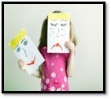 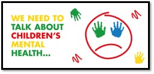
The 2015 Children’s Mental Health Report by the Child Mind Institute also suggested that giving children access to mental-health resources early in their education plays a critical role in mitigating negative consequences later in life.
The current school educational system places a lot of emphasis on awareness about physical health and hygiene but not as much on mental health and resilience. The future generation has to be raised in a way that makes them more cognizant of their mental health and the role it plays in leading a healthy, balanced life. This responsibility lies in the hands of many stakeholders such as schools, teachers, parents, and counselors. There are different ways and resources that could be used to encourage children to work towards their mental fitness. For example, deep breathing, relaxation exercises, mindfulness meditation, and yoga are some of the commonly used practices by people to train their minds to become strong and resilient in the face of adversities. They are highly beneficial and can have a lasting positive impact on the overall well-being (Cherkin, Sherman & Balderson, 2016; Woodyard, 2011). As a School Psychologist & Behavioral Trainer, I used these methods very frequently with children of different age groups with an aim that having learned all these skills, they will be able to better understand themselves at an emotional and psychological level. But I observed that most of the time, children (especially, in the age range of 5-12 years) find it difficult to establish a connection with these practices because they find them ‘less engaging’ or ‘boring’.
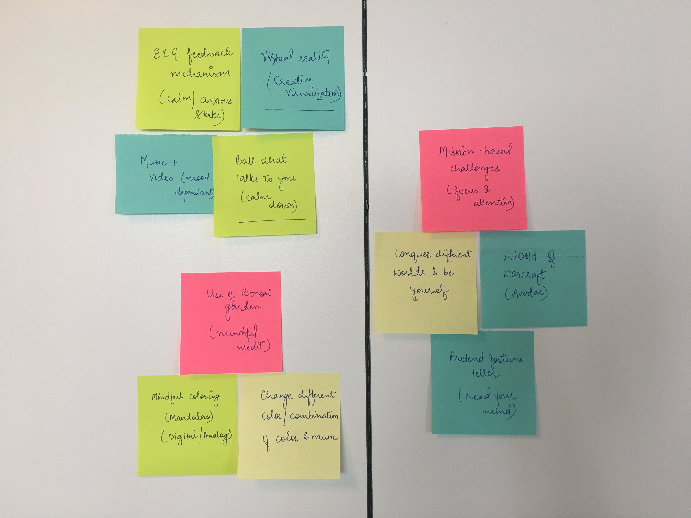
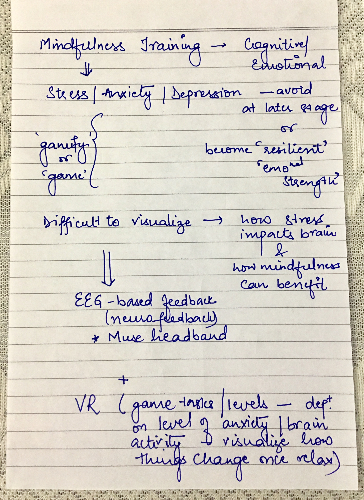
Anxiety is one of the most commonly occurring mental health issues among children (Verhulst,
1997). The 2015 Children’s Mental Health Report by the Child Mind Institute revealed that approximately 31.9% of children have been diagnosed with anxiety-related issues. According to the National Institute of Health, around 25% of young children frequently experience symptoms of anxiety but if they have developed strategies and skills to cope with such situations, then they are most likely able to successfully handle them effectively.
Researches in the field of child development have shown that the learning experiences encountered in the earliest years (age of 5 to 12 years) have a significant impact on shaping their young brains (Huttenlocher & Dabholkar, 1997).
The CBT approach has been found to be one of the most widely used interventions
for anxiety-related issues (Butler, et.al., 2006; Smits & Hofmann, 2008). Research has consistently shown that creative, play-based activities, presented within the context of an empathically attuned therapeutic relationship, engage children and enhance the effectiveness of CBT (Knell & Dasari, 2011; Lowenstein, 2016; Podell et al., 2009; Shelby & Berk, 2009).
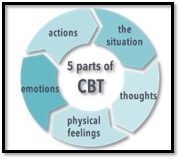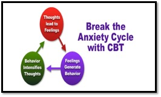
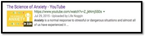
The Crumpled Paper Throw game (Lowenstein, 2016) is an active and engaging game focused on psychoeducation of anxiety, its associated physiological responses, and the process of CBT. This helps to maintain children’s interest and helps them to absorb the material. But apart from information, it doesn’t give an opportunity to learn skills and strategies effectively handle anxiety-provoking situations.
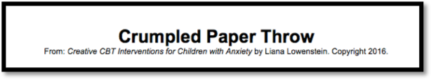
Calm and Breathe+ is a mobile-based app which focuses on guided meditation and deep breathing
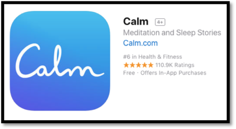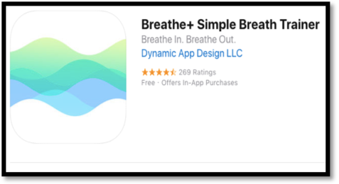
Breathe, Think, Do with Sesame (Sesame Street) is a kids-based breathing app which helps the child to visualize the inhalation and exhalation process during a relaxation session
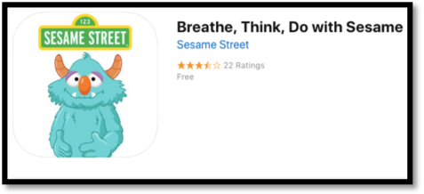
But presently, there aren’t any resources that are designed in a way that a child can consume and understand such a complex and nuanced area of mental health such as anxiety. Thus, the biggest challenge here is to create a comprehensive resource that is engaging enough for the kids themselves. Along with it being a knowledge storehouse, it should also have a plethora of various resources and tools to work towards mental fitness.

The goal of this design solution is to teach children how to calm the monkey in their minds.

Website
Game